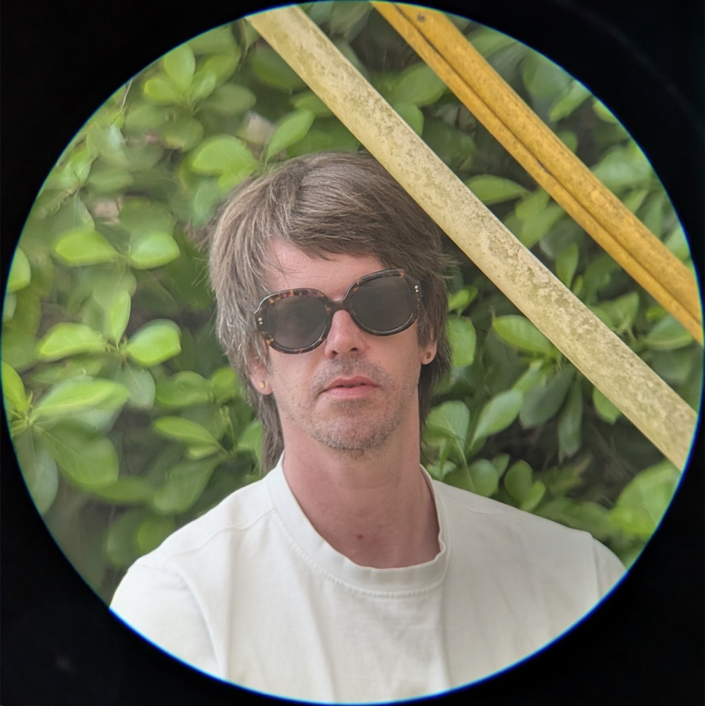

Designer-Engineer · Atlanta
I think
I think
in systems.
I learn a business until I can see the whole of it — how it runs, how it earns, where the real problem sits. Then I collaborate to solve it, in design and in code. What follows is one of those systems, built end to end.
Interactive examples barnesy.me ↗

Past collaborators